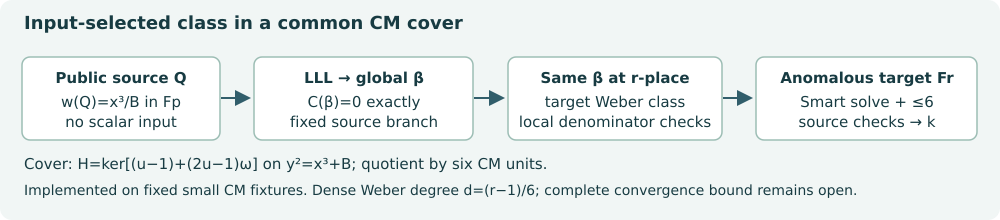
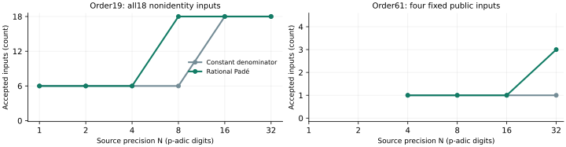

16 November 2026 — round four
The evaluator now selects compatible global Weber roots from public source coordinates. Rational Padé recognition transfers all18 nonidentity order19 inputs from F79 to an anomalous F19 target at tested8/16/32 source digits, and3/4 fixed public order61 inputs from F1531 to F61 at32 digits. Native claim PCC-20261116-fb2ab0, unsigned. [pcc:unverified]

For u=3 or5, b=2u−1 and r=3u(u−1)+1. In K=Q(ω), ω²+ω+1=0, the CM cover [(u−1)+bω] on y²=x³+B has kernel H of order r under the written CM interpretation. Quotient its nonzero points by the six units using w=x³/B. The common field is K[W]/C, degree d=(r−1)/6. Fixed primes send the same formal W to the source and target generator classes.
| Completed model | Source / subgroup / cofactor | Weaker target | Dense degree |
|---|---|---|---|
| B659 | F79 /19 /4 | anomalous F19 | 3 |
| B2 | F1531 /61 /25 | anomalous F61 | 10 |
The recognizer takes model,Q,N only. It lifts w(Q), runs exact LLL on the source congruence A(W)−w(Q)B(W), and accepts only a certified global root β=A/B matching that source branch. It evaluates β at the fixed target place, with local denominator cancellation where required. No source scalar, point table or orbit label is supplied. [pcc:unverified]

Against the constant-denominator version, rational candidates improve the observed order19 complete-coverage bin from16 to8 digits and order61 N32 coverage from1/4 to3/4. Untested precisions are not minimum-precision results. The fourth order61 input remains unrecognized. [pcc:unverified]
The actual order19 kernel is C(W)=W³−(36+24ω)W²−48(1+ω)W+(-128+192ω)/19. Its reduction at7,ω=2 is the irreducible cubic W³+3W+5. Source roots are58,67,46; target roots are2,14,17. One recognized root is β=(16+44ω)/9−(175+20ω)W/9+(10−13ω)W²/36. Native exact division displays C(β)=C(W)q(W). The Lean endpoint proves this polynomial identity and its vanishing in the principal-ideal quotient. [pcc:unverified]
Under the written CM specialization argument, Q=[k]P selects the global Weber class of [k]T, hence the target class w([k]R). Decompression gives a target point S=[εk]R for one of six CM units ε. Smart’s classical anomalous-curve solver obtains εk; at most six source multiplications recover k. Weber coordinates themselves are not additive. Every accepted answer is checked with OpenSSL on the source and target. [pcc:unverified]
Public example: Q=(746,1002) over F1531 yields target Weber25 and recovered scalar35 at N32. A second input (21,818) yields42 and57. These scalars are outputs of target decoding, not inputs to recognition. [pcc:unverified]
Nine named Lean endpoints cover the two emitted global-root multiples, their quotient vanishing and cleared identities, auxiliary irreducibility and source/target factorizations. The unchanged gate audits55 theorems, zero failing and zero trusted native exceptions; explicit axiom output uses standard foundations only. Four final IDC1 component records each accept32 samples and reject four mutations. Claim PCC-20261116-be69df, unsigned. Full CM theory, oriented specialization and native LLL/Smart correctness are not formalized. [pcc:unverified]
Controls reject a two-prime CRT chimera despite both local fits, a genuine wrong global root at the source, conjugate orientation/pole, β+1 and k+1. All16 qualification calls finish, including zero-acceptance calls. Of nine setup calls across three preserved constructors, five produce models and four time out at60seconds. No order127 model or public-point image is reported. Compiler, issuer and Lean failures remain archived. Two large compiler logs stay local with tracked hashes/excerpts under the artifact policy. No PNG previews or direct data uploads are added. [pcc:unverified]
Charge kernel construction and fixture admission, p-adic precision, LLL in dimension2d+2, global inversion/root checks, local evaluation, target solving and source comparisons. These are local correctness trials: no timing, scaling, strongest-tool or independent execution comparison. The explicit field degree grows with r; it is an implementation cost, not a lower bound on compressed evaluation.
The next obligation is a compact evaluator with a height/precision bound and full costs, extending beyond the generated CM family. The original arbitrary-curve goal remains open. This example uses established CM, LLL and Smart methods; no novelty claim. KB, Conductor and Cargo are unavailable. Mathlib4.24 is pinned to f897ebcf72cd16f89ab4577d0c826cd14afaafc7.
Evidence: full construction, scalar argument and costs, protocol, six-field proof map, raw receipts and statement bindings. Primary sources: Lenstra–Lenstra–Lovász1982 §§1–2; Bourdon–Clark arXiv1612.03229; Lauter–Stange arXiv0803.0728; FLINT3.3.1 polynomial-GCD source; repository CT84/115/116/119/124.